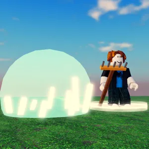
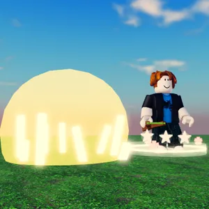
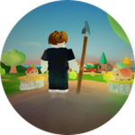
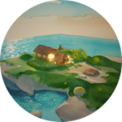
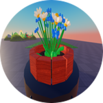

Store
Everything in the game can be earned by playing. What you buy is a shortcut on the same road, never something you can't reach for free. Purchases happen on Roblox — this site never takes payment.

Wind Staff — Fennick's Form
Fennick's page for the Rake: hold it like a monk's staff. Every 3rd blow turns (+20%), every 5th crowns (+40%), with its own trail and sounds.
Free way: win 150 nights with the Rake and you learn the rhythm by practice, without the look.
249 R$
View on Roblox
Seed Rain — Fennick's Form
Fennick's page for the Slingshot: breathe, draw, let go. Every 3rd seed turns, every 5th crowns, with its own trail and sounds.
Free way: win 150 nights with the Slingshot.
249 R$
View on Roblox
Keeper's Book — forever
+10% experience from harvests, defence and daily streaks, for good.
Free way: levels come anyway; the Book only speeds the road up.
299 R$
View on Roblox
Starter Pack
Once per Keeper: 5 Second Dawns, the Keeper's Book for 30 days, the title Keeper of the First Dawn and dawn-coloured lanterns. Offered after your first night won.
Free way: one Second Dawn comes free every day.
79 R$
View on Roblox
Extra Plot
Opens your second plot straight away, so you grow more at once.
Free way: the second plot opens by itself at level 10.
149 R$
View on RobloxBought inside the game
These are one-off or 30-day items. Find them in the game under ☰ → Shop.
- Second Dawn — 19 R$. When the Heart has one bite left, it holds one more tonight. One is free every day.
- Keeper's Book, 30 days — 79 R$. +15% experience for 30 days.
- A Form for 30 days — 89 R$. Wind Staff or Seed Rain for 30 days instead of forever.
Prices are in Robux and are set on Roblox; if they differ from this page, Roblox is right. Odds of rare harvests are the same for everyone and never change with purchases.